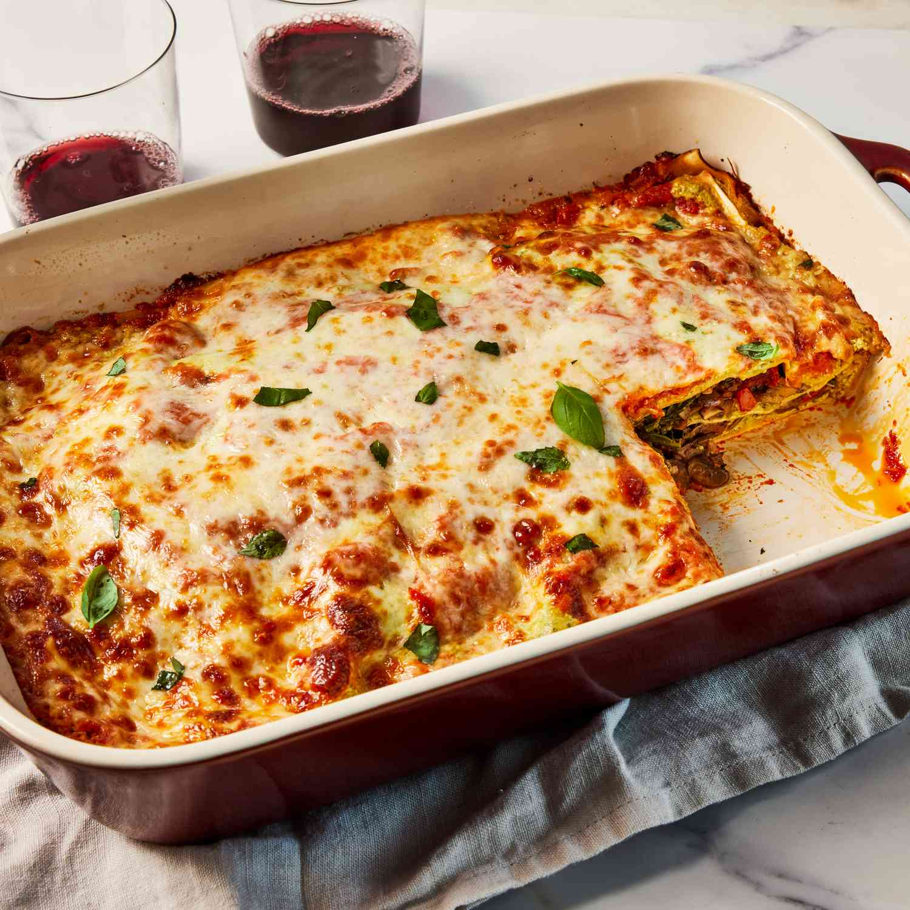

Lasagna

Description
A wonderful creamy lasagna for all pasta lovers. If you're not already a pasta
lover you will become one! Carbs and creamy sauces, yum!
Easy recipe to follow. Just mix all ingredients together and throw it in the oven.
Wait, then enjoy!
Ingredients
- 2 tablespoons extra-virgin olive oil, divided
- 1 pound cremini mushrooms, thinly sliced
- 1 medium red onion, finely chopped
- 1 small red bell pepper, chopped
- 1/2 cup sun-dried tomatoes, chopped
- 3 medium cloves garlic, finely chopped
- 3/4 teaspoon salt, divided
- 1/4 teaspoon crushed red pepper
- 1 (10-ounce) package baby spinach
- 2 cups shredded low-moisture, part-skim mozzarella cheese, divided
- 1 (15-ounce) container part-skim ricotta cheese
- 1 cup grated Parmesan cheese, divided
- 1/4 cup refrigerated basil pesto
- 1 large egg, lightly beaten
- 1 (24-ounce) jar low-sodium marinara sauce, divided
- 12 no-boil whole-wheat lasagna noodles
- 1 tablespoon fresh basil leaves
Steps
- Preheat oven to 350°F. Lightly coat a 9-by-13-inch broiler-safe baking
dish with cooking spray. Heat 1 tablespoon oil in a large skillet over
medium-high heat. Add mushrooms, onion and bell pepper; cook, stirring
occasionally, until the mushroom liquid has cooked off and the vegetables
are tender, about 8 minutes. Add sun-dried tomatoes, garlic, 1/2 teaspoon
salt and crushed red pepper; cook, stirring constantly, until fragrant, about
1 minute. Transfer the mixture to a medium bowl. (Do not wipe the skillet clean.)
- Add the remaining 1 tablespoon oil to the pan; heat over medium-high heat. Add
spinach; cook, stirring occasionally, until wilted, about 2 minutes. Transfer
to a clean kitchen towel and let cool for 5 minutes. Gather the towel and
squeeze firmly over the sink to remove as much liquid as possible. Transfer
the spinach to a cutting board and roughly chop. Add to the vegetable mixture;
stir until combined.
- Combine 1/2 cup mozzarella, ricotta, 1/2 cup Parmesan, pesto, egg and the
remaining 1/4 teaspoon salt in a medium bowl; stir until well blended.
- Spread 1 cup marinara in the prepared baking dish; top with a layer of 4
noodles. Spread 1 cup ricotta mixture evenly over the noodles; top with 2
cups vegetable mixture. Repeat the layers once. Top with the remaining 4
noodles, 1 cup ricotta mixture and 1 cup marinara. Sprinkle with the remaining
1½ cups mozzarella and ½ cup Parmesan. Cover with foil.
- Bake for 30 minutes. Carefully remove the foil; bake until the top is
browned around the edges, about 20 minutes more. Let cool slightly, about
10 minutes. Slice and serve topped with basil.